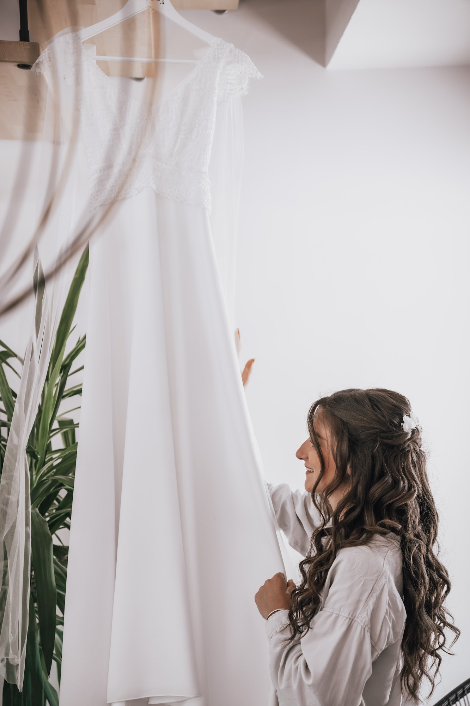
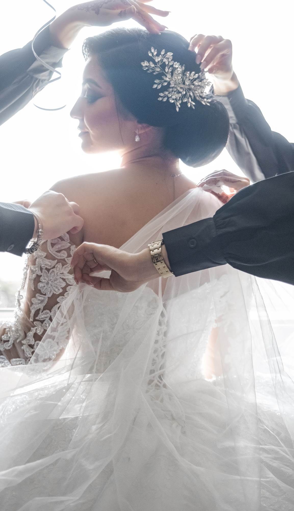
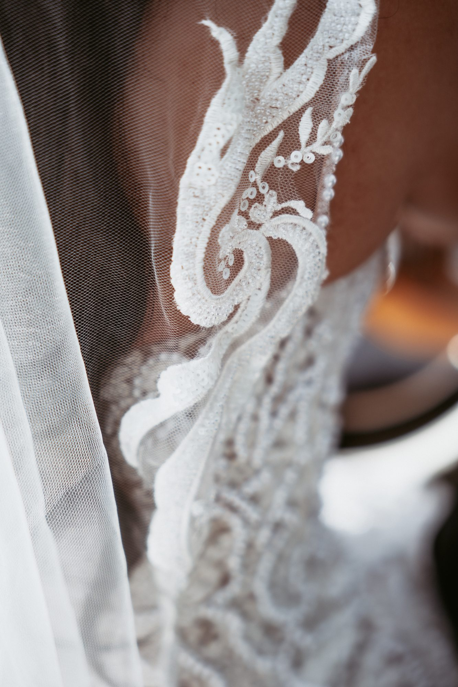
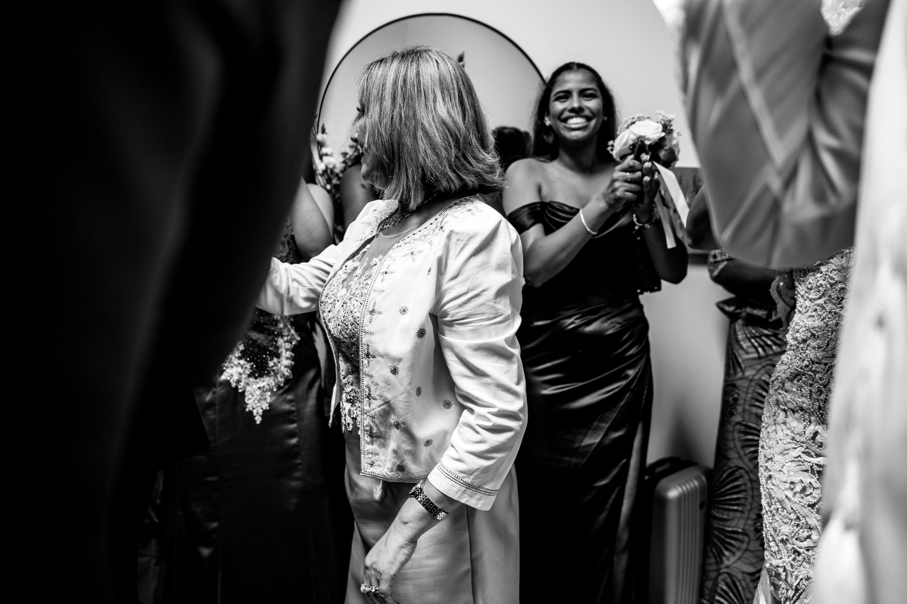

Photos des préparatifs de la mariée : nos conseils pour de beaux souvenirs
Les heures qui précèdent le grand oui possèdent une saveur particulière, entre fébrilité joyeuse et grande émotion. Capturer ces instants demande un peu d'anticipation pour laisser la magie opérer naturellement. De la lumière d'une chambre à la mise en beauté, voici mes conseils pour réussir vos photos des préparatifs de la mariée.

Choisir la bonne pièce pour vos photos des préparatifs de la mariée
L'espace dans lequel vous choisissez de vous préparer transforme radicalement l'atmosphère de votre reportage. Une chambre baignée de lumière naturelle avec de beaux volumes apporte une clarté douce à la peau et met en valeur les étoffes. À l'inverse, un espace encombré ou trop sombre crée des contraintes visuelles inutiles.
Dans un domaine en Beaujolais ou une suite d'hôtel près de Lyon, privilégiez toujours la pièce qui possède la plus grande fenêtre. Épurez au maximum les tables et les chaises la veille au soir. Un décor dégagé permet à l'objectif de se concentrer sur l'essentiel : vos regards, vos gestes et le lien chaleureux avec vos proches.

Rassembler tous les accessoires au même endroit

Le matin du mariage, le temps file à une allure folle. Pour éviter de chercher vos alliances ou votre parfum au moment où la coiffure s'achève, regroupez tous vos éléments précieux au même endroit.
Placez dans une jolie boîte vos chaussures, vos bijoux, le faire-part, le flacon de parfum et la papeterie. Lorsque j'arrive sur place, cette prévenance me permet de réaliser des clichés détaillés de votre univers sans interrompre le fil de votre maquillage.
Anticiper la fin du maquillage et de la coiffure

La lumière du matin révèle la finesse des gestes lors du maquillage et de la coiffure. Pour obtenir des images équilibrées, demandez à vos prestataires de vous installer face à la fenêtre plutôt que dos à elle.
Prévoyez d'être entièrement coiffée et maquillée une heure avant le départ pour la cérémonie. Cette marge d'air vous évitera toute précipitation pour passer la robe de mariée et permettra de saisir des images paisibles avant de retrouver vos invités.
L'essayage et les détails de la robe de mariée

Le moment où l'on boutonne la robe marque un tournant émotionnel fort. C'est l'instant où le mariage devient concret. Pour ce temps d'habillage, choisissez un cintre élégant en bois ou en tissu plutôt qu'un cintre en plastique du pressing.
Demandez à votre mère, une sœur ou votre témoin d'être déjà habillée et prête pour vous aider à ajuster la dentelle ou nouer le ruban. Leur présence soignée à vos côtés apporte une vraie cohérence esthétique à ce passage.
Inviter la complicité et l'émotion de vos proches
Les préparatifs ne sont pas un défilé solitaire. Ce sont des minutes partagées avec les personnes les plus chères à votre cœur. Les rires d'un groupe d'amies en peignoir, le regard ému d'un père qui vous découvre ou une accolade sincère constituent le cœur battant du reportage.
Faites confiance au photographe mariage pour capter ces moments sur le vif, sans jamais imposer de pose rigide. Mon approche consiste à m'effacer doucement pour laisser vibrer la spontanéité d'un câlin ou d'une larme retenue.

Créer une atmosphère calme et agréable
L'ambiance sonore et visuelle de la pièce influence directement vos expressions. Une playlist douce, quelques fleurs fraîches et une température agréable aident à faire redescendre le stress des préparatifs.
Limitez le nombre de personnes présentes dans la pièce durant les trente dernières minutes. Garder seulement un ou deux confidents permet de préserver une bulle de sérénité avant de vous lancer dans le tumulte réjouissant de la journée.
Questions fréquentes
Combien de temps faut-il prévoir pour les photos des préparatifs de la mariée ?
Comptez idéalement entre une heure et demie et deux heures. Ce temps permet de photographier les accessoires, le maquillage, l'habillage et d'accorder un vrai moment d'échange avec vos proches sans regarder la montre.
Faut-il que le marié se prépare au même endroit ?
Ce n'est pas obligatoire. Si les préparatifs ont lieu sur le même domaine ou dans un périmètre proche autour de Lyon, je peux facilement me déplacer entre les deux pièces pour raconter vos deux histoires en parallèle.
Que dois-je porter pendant le maquillage et la coiffure ?
Optez pour un peignoir, un kimono ou une chemise boutonnée sur l'avant. Cela permet de se changer facilement sans risquer d'abîmer votre coiffure ou votre maquillage.
Que faire si la chambre des préparatifs est très petite ?
Nous trouverons toujours une solution. Il suffit souvent de déplacer un meuble, d'utiliser le couloir, une véranda ou un coin de jardin abrité pour réaliser les portraits de l'habillage en pleine lumière.
Envie de me raconter vos préparatifs et votre projet de mariage ? Écrivez-moi pour discuter ensemble de votre journée.
Parlons de votre projet